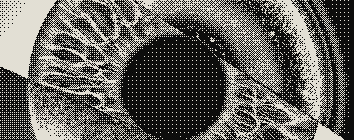

Reading
Manga, webtoons and books I've read or am reading.
Usogui
Manga, webtoons and light novels
- Step By Step (webtoon)
- One Piece
- Naruto
- The Apothecary Diaries
- Zom 100
- Dr. Stone
- Horimiya
- Jujutsu Kaisen
- Kagurabachi
- The NPCs in This Village Sim Game Must Be Real
- Just Listen to This Song
- 6 Immortal Girls and the Man Destined to Die
- My Childhood Friend Cheated on Me and Wants Me Dead
- Osananajimi Kanojo no Morahara ga Hidoin de Zetsuen Sengen shite Yatta
- Kokou no Hito (The Climber)
- Erased
- Magi: The Adventures of Sinbad
- A Silent Voice
- Bakemonogatari
- Rascal Does Not Dream of Bunny Girl Senpai
- Kaguya-sama: Love Is War
- Chainsaw Man
- Fullmetal Alchemist
- Death Note
- I Want to Eat Your Pancreas
- The Promised Neverland
- Bocchi the Rock!
- My Dress-Up Darling
- Dandadan
- Alya Sometimes Hides Her Feelings in Russian
- Blue Period
- Polar Opposites
- Kuroko's Basketball
- Haikyu!!
- I Made Friends with the Second Prettiest Girl in My Class
- Hunter x Hunter
- Mob Psycho 100
- Vinland Saga
- Mashle
- Lovely Complex
- Life Reversal: I Was Cheated On and Falsely Accused, but Now the Most Beautiful Girl in the School Is Getting Close to Me
- Hensuki
- Blood on the Tracks
- Anohana: The Flower We Saw That Day
- Parasyte
- Kakegurui
- Hand Jumper (webtoon)
Books
- Harry Potter (the whole series)
- Warriors (the first three arcs)
- Wings of Fire (the whole series)
- Shami Stovall (all of her books)